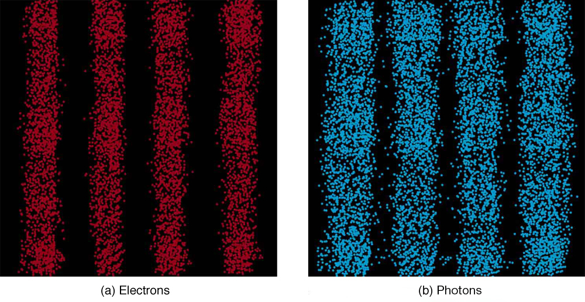
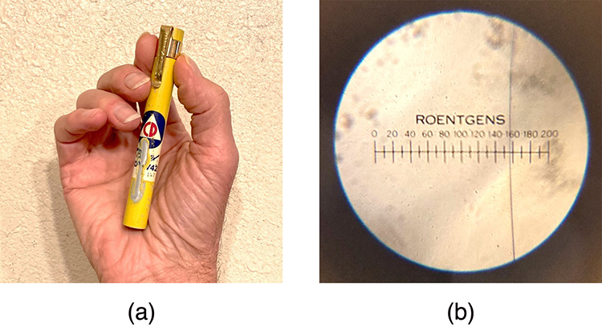

U4-02 — Uncertainty Principle
Correct the diagram label from Protons to Photons, using exact pinned upstream image bytes.
Before

Applied for 1.1

Quantum mechanics, relativity, nuclear and particle physics — 29 sections, plus four supporting appendices.
11 scoped correction records applied to the maintained development draft. One item below is held for author review; other shared issues and optional expansions are listed separately. Existing section identities, numbering, organization and exercise placement are preserved. Published 1.0 is unchanged.
Development textbook · Items needing review · Applied corrections · Other findings · Preserved differences and limits
held-for-author-review
Upstream changes Western reactors to more recent reactors. Both versions make a broad safety claim, and the local next-chapter promise does not match the present organization.
Choose whether to use just the upstream wording or remove the last sentence. The preceding Chernobyl example stands without that generalization; no change applied.
View current passage in textbook
While 70 kg of material may not be a very large mass compared to the amount of fuel in a power plant, it is extremely radioactive, since it only has a 30-year half-life. Six megacuries (6.0 MCi) is an extraordinary amount of activity but is only a fraction of what is produced in nuclear reactors. Similar amounts of the other isotopes were also released at Chernobyl. Although the chances of such a disaster may have seemed small, the consequences were extremely severe, requiring greater caution than was used. More will be said about safe reactor design in the next chapter, but it should be noted that Western reactors have a fundamentally safer design.
While 70 kg of material may not be a very large mass compared to the amount of fuel in a power plant, it is extremely radioactive, since it only has a 30-year half-life. Six megacuries (6.0 MCi) is an extraordinary amount of activity but is only a fraction of what is produced in nuclear reactors. Similar amounts of the other isotopes were also released at Chernobyl. Although the chances of such a disaster may have seemed small, the consequences were extremely severe, requiring greater caution than was used. More will be said about safe reactor design in the next chapter, but it should be noted that more recent reactors have a fundamentally safer design.
Correct protons to photons in the double-slit caption, matching the discussion and alternative text.
Alternative text: A double-slit interference wavelength pattern for electrons is shown in figure a and for photons in figure b.
Double-slit interference for electrons (a) and protons (b) is identical for equal wavelengths and equal slit separations. Both patterns are probability distributions in the sense that they are built up by individual particles traversing the apparatus, the paths of which are not individually predictable.
Alternative text: A double-slit interference wavelength pattern for electrons is shown in figure a and for photons in figure b.
Double-slit interference for electrons (a) and photons (b) is identical for equal wavelengths and equal slit separations. Both patterns are probability distributions in the sense that they are built up by individual particles traversing the apparatus, the paths of which are not individually predictable.
Correct the diagram label from Protons to Photons, using exact pinned upstream image bytes.

Repair the uranium-238 alpha-decay equation: remove duplicated thorium scripts and incorrect atomic number 92; retain the mass-number-only notation used upstream.
Correct the proton-rich beta-decay sign to beta-plus; keep neutron-rich beta-minus unchanged.
All forms of beta decay occur because the parent nuclide is unstable and lies outside the region of stability in the chart of nuclides. Those nuclides that have relatively more neutrons than those in the region of stability will decay to produce a daughter with fewer neutrons, producing a daughter nearer the region of stability. Similarly, those nuclides having relatively more protons than those in the region of stability will decay or undergo electron capture to produce a daughter with fewer protons, nearer the region of stability.
All forms of beta decay occur because the parent nuclide is unstable and lies outside the region of stability in the chart of nuclides. Those nuclides that have relatively more neutrons than those in the region of stability will decay to produce a daughter with fewer neutrons, producing a daughter nearer the region of stability. Similarly, those nuclides having relatively more protons than those in the region of stability will decay or undergo electron capture to produce a daughter with fewer protons, nearer the region of stability.
Clarify that an ion pair contains one positive and one negative charged particle, using upstream wording.
Another very common radiation detector is the Geiger tube. The clicking and buzzing sound we hear in dramatizations and documentaries, as well as in our own physics labs, is usually an audio output of events detected by a Geiger counter. These relatively inexpensive radiation detectors are based on the simple and sturdy Geiger tube, shown schematically in [existing reference](b). A conducting cylinder with a wire along its axis is filled with an insulating gas so that a voltage applied between the cylinder and wire produces almost no current. Ionizing radiation passing through the tube produces free ion pairs that are attracted to the wire and cylinder, forming a current that is detected as a count. The word count implies that there is no information on energy, charge, or type of radiation with a simple Geiger counter. They do not detect every particle, since some radiation can pass through without producing enough ionization to be detected. However, Geiger counters are very useful in producing a prompt output that reveals the existence and relative intensity of ionizing radiation.
Another very common radiation detector is the Geiger tube. The clicking and buzzing sound we hear in dramatizations and documentaries, as well as in our own physics labs, is usually an audio output of events detected by a Geiger counter. These relatively inexpensive radiation detectors are based on the simple and sturdy Geiger tube, shown schematically in [existing reference](b). A conducting cylinder with a wire along its axis is filled with an insulating gas so that a voltage applied between the cylinder and wire produces almost no current. Ionizing radiation passing through the tube produces free ion pairs (each pair consisting of one positively charged particle and one negatively charged particle) that are attracted to the wire and cylinder, forming a current that is detected as a count. The word count implies that there is no information on energy, charge, or type of radiation with a simple Geiger counter. They do not detect every particle, since some radiation can pass through without producing enough ionization to be detected. However, Geiger counters are very useful in producing a prompt output that reveals the existence and relative intensity of ionizing radiation.
Use the direct upstream description of programmed cell death.
Replace the mismatched radiation-detector photograph with the upstream pocket dosimeter and scale photographs; credit Gary B. Swift under the pinned CC BY source.


Synchronize dosimeter caption, credit and alternative text with the replacement photographs; correct JPEG media type.
Alternative text: Image shows a person’s hand holding a cylindrical object placed near a small piece of radioactive material. A dial indicator is connected to the cylindrical radiation detector.
These dosimeters (literally, dose meters) are personal radiation monitors that detect the amount of radiation by the discharge of a rechargeable internal capacitor. The amount of discharge is related to the amount of ionizing radiation encountered, a measurement of dose. One dosimeter is shown in the charger. Its scale is read through an eyepiece on the top. (credit: L. Chang, Wikimedia Commons)
Alternative text: (a) A photo of a dosimeter in the palm of a hand. (b) A photo of a Roentgen scale from 0 to 200.
(a) Early electroscope-style dosimeters (literally, dose meters) such as the Civil Defense Bendix pocket dosimeter shown here came into use in the mid-1950s as personal radiation monitors that detect the amount of radiation. (b) The dosimeter is initially reset by charging it at high voltage using a charger. The person using this dosimeter would carry it in their pocket and occasionally point it toward a light and look through the lens on the end to see the fine line of the electroscope superimposed on a Roentgen scale. As radiation passes through the dosimeter (and the wearer!), it discharges the dosimeter and the indicator on the scale moves up. (credit: Gary B. Swift)
Round the photoelectron kinetic energy consistently to hundredths: 2.96 - 2.71 = 0.25 eV; synchronize StarMath annotation.
Use volts for the stopping potential and match the rounded 0.25 eV maximum kinetic energy. Discussion shortening remains proposed.
The energy of this 420-nm photon of violet light is a tiny fraction of a joule, and so it is no wonder that a single photon would be difficult for us to sense directly—humans are more attuned to energies on the order of joules. But looking at the energy in electron volts, we can see that this photon has enough energy to affect atoms and molecules. A DNA molecule can be broken with about 1 eV of energy, for example, and typical atomic and molecular energies are on the order of eV, so that the UV photon in this example could have biological effects. The ejected electron (called a photoelectron) has a rather low energy, and it would not travel far, except in a vacuum. The electron would be stopped by a retarding potential of but 0.26 eV. This simply means that the 420-nm photons with their 2.96-eV energy are not much above the frequency threshold. You can show for yourself that the threshold wavelength is 459 nm (blue light). This means that if calcium metal is used in a light meter, the meter will be insensitive to wavelengths longer than those of blue light.
The energy of this 420-nm photon of violet light is a tiny fraction of a joule, and so it is no wonder that a single photon would be difficult for us to sense directly—humans are more attuned to energies on the order of joules. But looking at the energy in electron volts, we can see that this photon has enough energy to affect atoms and molecules. A DNA molecule can be broken with about 1 eV of energy, for example, and typical atomic and molecular energies are on the order of eV, so that the UV photon in this example could have biological effects. The ejected electron (called a photoelectron) has a rather low energy, and it would not travel far, except in a vacuum. The electron would be stopped by a retarding potential of 0.25 V. This simply means that the 420-nm photons with their 2.96-eV energy are not much above the frequency threshold. You can show for yourself that the threshold wavelength is 459 nm (blue light). This means that if calcium metal is used in a light meter, the meter will be insensitive to wavelengths longer than those of blue light.
Shorten the photoelectric Discussion by retaining original sentences and deleting biological, perception, travel-distance and redundant commentary, as approved by the author.
The energy of this 420-nm photon of violet light is a tiny fraction of a joule, and so it is no wonder that a single photon would be difficult for us to sense directly—humans are more attuned to energies on the order of joules. But looking at the energy in electron volts, we can see that this photon has enough energy to affect atoms and molecules. A DNA molecule can be broken with about 1 eV of energy, for example, and typical atomic and molecular energies are on the order of eV, so that the UV photon in this example could have biological effects. The ejected electron (called a photoelectron) has a rather low energy, and it would not travel far, except in a vacuum. The electron would be stopped by a retarding potential of 0.25 V. This simply means that the 420-nm photons with their 2.96-eV energy are not much above the frequency threshold. You can show for yourself that the threshold wavelength is 459 nm (blue light). This means that if calcium metal is used in a light meter, the meter will be insensitive to wavelengths longer than those of blue light.
The ejected electron (called a photoelectron) has a rather low energy. The electron would be stopped by a retarding potential of 0.25 V. You can show for yourself that the threshold wavelength is 459 nm (blue light).
These are shared issues or broader additions, not applied upstream corrections. They are recorded here so a matching upstream passage is not mistaken for validation. You can choose to address any of them before 1.1; otherwise they remain on the author read-through/exercise-revision list.
Local paragraph places electromagnetism/thermodynamics development in the 18th century and contains prediction predicted. Broader historical explanation remains author-led; no silent rewrite. View passage
Resolved in U4-09 through U4-11: consistent hundredths rounding, stopping potential in volts, and author-approved three-sentence Discussion. Biological claims and later UV misidentification removed. View passage
Both versions state Rutherford died in 1934. Flag for the historical fact-check during the author read-through; unchanged by this upstream comparison. View passage
Both versions omit the fourth power on K in Stefan–Boltzmann units; the local table also retains the old exact-form permeability expression. Plan a focused units/exactness audit rather than replace newer local constants with older upstream numbers. View passage
Both versions retain a tau-minus decay expression whose neutrino/antineutrino family signs merit checking during exercise revision; the upstream row-format change does not fix the physics. View passage
Upstream adds Chien-Shiung Wu prose and a composite portrait. Preserve current coverage for this correction release; consider as author-led broader revision. View passage
Upstream adds radioimmunoassay and Yalow/Berson history. This adds coverage rather than correcting retained text; deferred. View passage
Shared medical-dose and risk estimates are not newly verified by an upstream match. Include them in the planned careful author read-through; no diagnostic guidance was added. View passage
Not every upstream change is an improvement or applicable to this adaptation. The authored quantum explanations, prior relativity corrections, reference repairs and newer local constants remain. The upstream factor-ten regression in an electron-energy calculation was rejected.
Retain explicit classical-limit explanation and experiment-based quantum introduction. Upstream insect image is a resized/cropped version, not a correction.
Preserve the authored blackbody history, ultraviolet-catastrophe figure, absorption definition and oscillator energy-step treatment. Upstream oscillator zero-point energy is not a reason to replace the adapted Planck explanation. Atomic spectra coverage appears later locally. Added analogies/AP material are outside this backport.
Preserve the authored apparatus explanation, maximum-energy emphasis, monochromatic-light and frequency-threshold qualifications, schematic reference and work-function definition. Upstream extended explanation is not an incremental correction and includes the same eV-versus-V and violet-versus-UV mistakes noted for later author review.
Retain the local de Broglie derivation and links to uncertainty and Bohr. The 54 eV calculation gives 8.659e-18 J from stated inputs; reject upstream 86.4e-18 J (factor ten error). Local 8.66e-18 J is consistent; 54.05 eV has excess precision, deferred with exercise polish.
Apply photons correction in the double-slit caption and diagram. Retain M01 inline fraction and uncertainty/probability-wave adaptations, including standard-deviation qualification. Do not restore removed energy-time subsection. Heisenberg historical judgment is an editorial expansion rather than a physics repair.
Retain electron-cloud and Coulomb-scattering explanation, charge-to-mass conceptual treatment, and omission of Millikan derivation. Do not restore upstream electron-only scattering claim or smallest-mass claim. An empty MathML object shifts ordinal comparisons but carries no missing physical quantity.
Preserve the rewritten Bohr/Rydberg derivation and local equation identities; upstream-only derivation blocks are alternate organization, not missing local coverage. Retain frequency (not upstream wavelength) in the photon-energy statement. Do not import omitted trigonometric grating example or AP exercises.
Preserve the adapted introductory bridge. No applicable shared correction; added simulation and AP questions remain outside adapted coverage.
Retain existing nebula introduction and higher-resolution Einstein portrait. Shark/GPS introductory replacement and added everyday-technology paragraph are broader editorial changes, previously deferred in relativity review.
Retain author-approved Refraction destination and local terminology; added learning objectives/term IDs/AP question do not require structural changes.
Preserve SR01 corrections, M02 proper-time notation and equation, and X09 spacetime sentence. Do not restore duplicated punctuation, stray and, or removed general-relativity cross-reference. Broader twin-paradox explanation remains for author revision.
Same length-contraction calculation and results; upstream flattens the aligned equation into one row. Keep local layout.
Velocity-addition token differences split composite identifiers or change prime glyphs; numerical values, signs, denominators and conclusions agree. Retain aligned calculations and separate identified Doppler equation; its relocation causes ordinal offsets in glossary math comparisons.
Preserve the corrected Impulse and Momentum link (X10) and existing conservation qualification; upstream target remains wrong.
Retain M02-era equation formatting and author-approved nuclear chapter destination/external energy-table links. No additional shared physics correction. Added critical-thinking/AP questions remain outside the adapted selection.
Retain combined nuclear-and-particle introduction with local length-scale overview rather than restoring a separate particle-physics chapter introduction.
Correct the mismatched dosimeter photograph with the pinned upstream replacement, caption, credit and alt text. Preserve X-ray spelling, adapted Curie history, range/charge qualification and omission of extra impulse derivation. Most math offsets come from the removed classical kinetic-energy formula.
Apply the short ion-pair clarification. Retain the existing radiation-detector scope; do not add unrelated simulation wrapper.
Retain conceptual force-distance discussion without reinstating trigonometry, existing nucleus notation and omission of redundant cross-references. The mass-table MeV/c² change is stacked versus inline fraction, not different units.
Apply corrected thorium equation and proton-rich beta-plus sign. Preserve earlier nucleus-notation repairs and selected coverage. Added Chien-Shiung Wu history and composite portrait are deferred broader historical expansion, not a required decay correction.
Hold reactor-safety sentence for author review. Retain adapted half-life explanation without restoring deleted exponential elaboration/exercises. Same 70 kg result; math difference only punctuation grouping. Omitted appendix links do not indicate missing exercises.
Retain the external MRI simulation fallback. Added radioimmunoassay/Yalow/Berson history is a broader expansion; do not import automatically.
Apply direct programmed-cell-death wording. Retain additional-risk qualification, shielding-type caveat and activity explanation. Preserve yr and X-ray conventions. Shared historical dose estimates and risk claims have not been newly validated; later author read-through should assess them.
Keep earlier M03 exercise-part removal; do not restore its malformed carbon-cycle question. Retain 17.59 MeV reaction, 3.37e14 J and 10.7 MW example results; upstream only regroups punctuation. No restoration of missing Frontiers section.
Retain adapted fusion reference wording and selected exercise scope. Upstream fission-energy equation differs only in punctuation grouping; no changed physical value.
Soviets versus USSR is optional wording, not a numerical or physics correction. Added positron geometry question is outside the adapted exercise selection; preserve present coverage.
Preserve author-approved X15–X19 repairs, including the residual nuclear-force/pion explanation, boson definition and deleted dangling references.
Preserve author-approved X20/X21 and local (b) numbering after omitted lepton-conservation part. Upstream equation table flattens rows but does not correct the tau-decay content; potential shared sign issues are listed for later exercise review, not silently imported.
Preserve X22–X25 repairs and positive-pion quark content. Removed parenthetical causes shifted math ordinals. Cosmic-ray artwork is visually the same diagram at lower resolution, so retain local image.
Atomic masses appendix: no shared differences and no unmatched additions found in mapped pinned upstream.
Selected radioactive isotopes appendix: no shared differences and no unmatched additions found in mapped pinned upstream.
Keep the newer local constants and positive elementary-charge convention; upstream older mass/G/epsilon values are not updates. Retain added yard conversion and corrected table row structure. Shared unit/exactness issues are separately noted for author read-through.
Retain the more explicit n=3 to n=2 L-alpha glossary description, which adds a MathML item and shifts subsequent ordinals. Preserve repaired nuclide scripts; do not restore upstream reversed A/Z placement. Table-row comparison confirms the remaining entries match.
Update source: OpenStax College Physics 2e, CC BY 4.0, pinned February 4, 2026 snapshot. Diagram imports use exact pinned bytes. Original figure credits remain in the textbook. Local consistency repairs and adapted wording are distinguished in the editorial records.